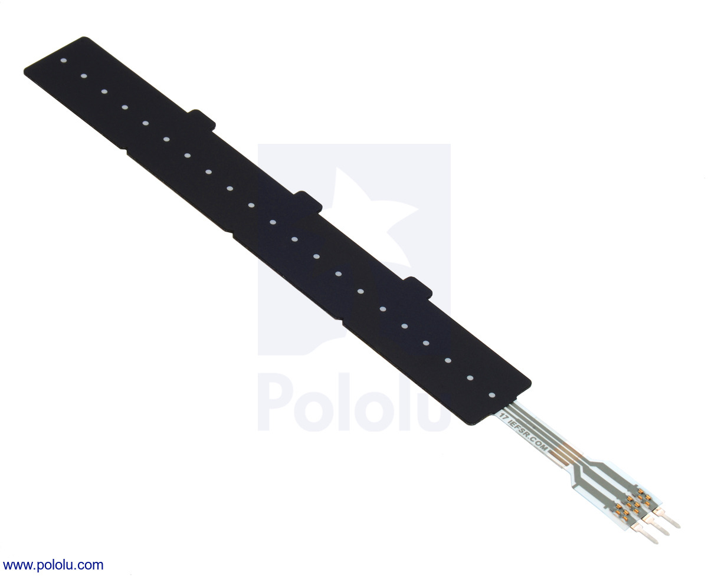
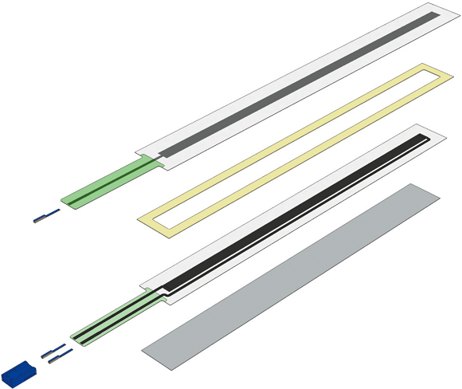

While there is no particular assignment for this page, this page serves as some project planning and prep. In this sense I will document a few desired points I wish to reach, and also some failures that I had.
Now for me I knew that the hardest part of this project would certainly be how to actual keep track of the finger position on some sensor such that I would be able to manipulate the sensor value just by sliding my finger. I came up and ideated with through a design that would potentially work. I read up on how potentiometers work, particularly linear potentiometers work, and they usually have some slider that controls the actual current path which means that a longer path means more resistance. I knew the idea would be similar.
So my first prototype for this iteration was to create a small conductive plate two two separate bases, one base which uses velostat that acts a sensor for whenever it was pressed onto a ground termainl which was my copper plate that it would increase the distance for resistance or not. So if I were to simplify this, I have two layers: A ground layer, and a controller layer. The ground layer in this iteration would be literally a taped up acrylic base using copper tape, and the control layer would be a large sheet of velostat.


Clearly from the images above, you can see that this was not very effective, it was sloppy, and broke occasionally, and the various pieces of tape didnt work. So when I connected the terminals to the arduino it didn't read anything at all, probably some messed up tape somewhere not connecting properly or just creating a short circuit.
My next iteration would have to require more research, make it more lean, and more robust. Thus I found a copper solid plate in the lab and decided to use that as well. Despite it being flimsy, I figured it might work. Along with that, instead of using a cut up rubber layer to separate both conductive layers, I used rubber bands. However, what I quickly found was that this approach wouldn't work as well because the copper plate, was well too lean:


After this is when I was able to come up with a more practical idea. I did some more research on how to best build this, and I came up on some practical current real world scenarios using force sensing and also some membrance components here:
Pololu force sensing potentiometer Membrane linear potentiometerThese resources provided some critical images which helped me understand better how to build this:
 In otherwords, what my final design would consiste of a resistive path on some printed base made of plastic or some non-conductive layer, along with a collector that is a short circuit path ontop of the base. Then there is a space that separate the layer for redudancy cases. Whenever pressure is applied, the electrical contact then is applied to the resistive path and the resistance can then be tracked.
This was what I was going to use in my future plan. Thankfully, I found a nice conductive layer that wouldn't require me to already print some conductive layer ontop of a membrance, because I was able to find one in the SEC. The only thing I had to do was use a press to head up the layer such that it maintains its conductive properties.